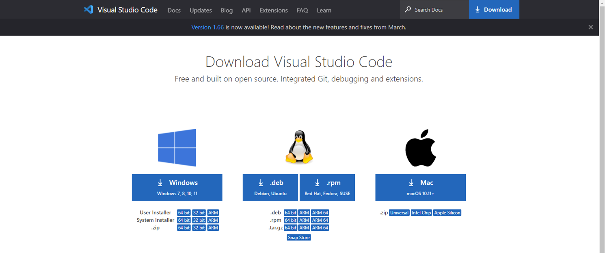
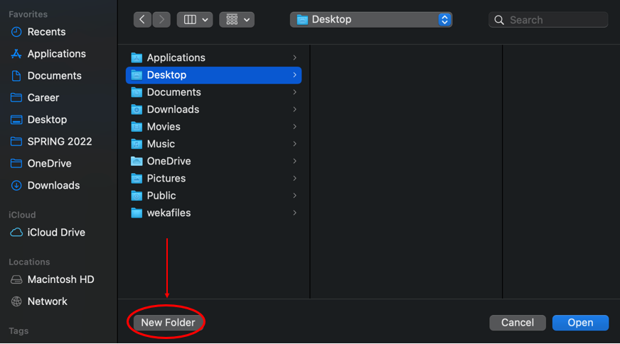
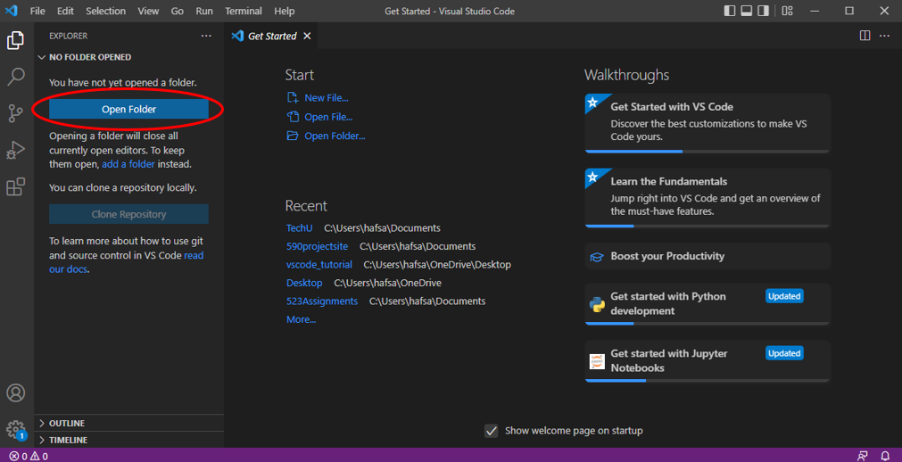
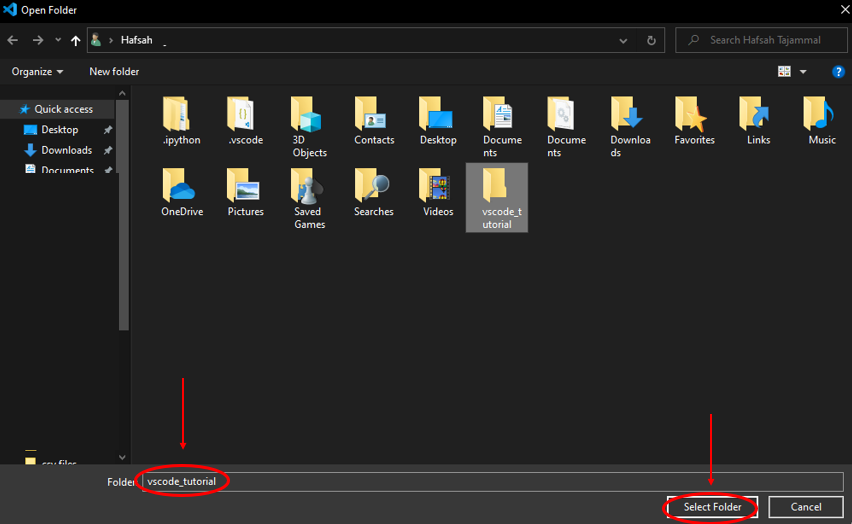

VSCode is one of the most flexible and popular integrated development environments (IDEs) you can write your code in. In this tutorial, you will learn how to download the app to your computer and open your first file to get started on your website. The included video will walk you through the necessary steps. If you'd prefer not to watch a video, we've included instructions and screenshots below that provide the same information.
Good luck, and have fun!
Step 1
Click HERE to access the download page for VSCode.
Step 2
Click on the download button depending on what operating system you are using (Windows vs Linux vs Mac):

Step 3
Once the app downloads, open it from where you saved the app in your Finder (Mac) or File Explorer (Windows). You should see this Get Started Page. Click on the Explorer icon to expand:
Step 4A (MAC)
If you’re using a MAC, click on Open Folder, and the Finder should pop up:
Step 4B (MAC)
Navigate to where you want to create this folder (ex: in the Desktop folder) and click ”New Folder”:

Step 4C (MAC)
Name your new folder “vscode_tutorial”, then click “Create”:
Step 4D (MAC)
Click open to open the folder in VSCode:
Step 4A (Windows)
If on Windows, create a new folder in your File Explorer and label it “vscode_tutorial”:

Step 4B (Windows)
Now, go back to VSCode and click “Open Folder”:
Step 4C (Windows)
Choose your newly created folder “vscode_tutorial” and click “Select Folder”:

Step 5A
You should now see your folder on the left side of the application. Click on the New File icon to make a file and name it “index.html”:
Step 5B
The file will now be included within your vscode_tutorial folder. Proceed to the HTML tutorial to learn what this file is for and write your very first website content: